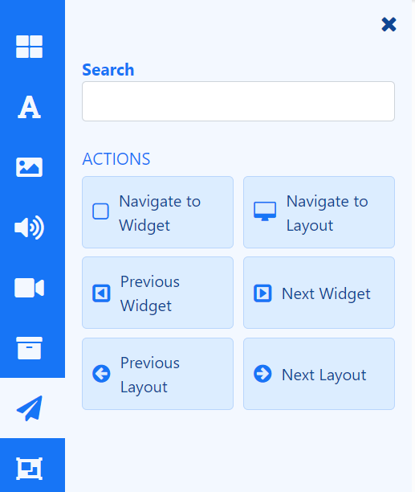
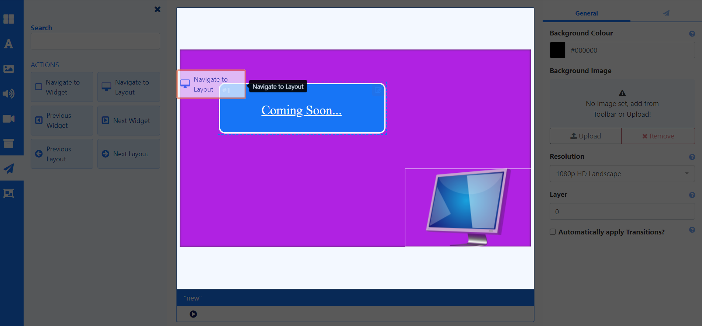

Interactive Actions
Documentation under review…
Actions can be attached to an entire Layout or a Widget which can be used to effect changes to the Layout. These can be triggered by Touch or Click or programmatically by webhook.
Scenario: A Product display has a product that the customer can pick up. An ‘internet of things’ device, such as a light sensor could be used to trigger a webhook to BI Square Brand Activation which loads that particular products information into a Layout to be shown.
Adding an Action
Widgets can have Actions attached to effect changes to the Layout, triggered by Touch, click or webhook.
Actions are created and managed from the Toolbox inside the Layout Editor and are shown on the Actions tab from the Properties Panel for a selected item:

- Select the required Action and drag to the Target.

- Once added, use the properties panel to set the Trigger Type and Target.
Set the Trigger Type:
- Trigger by touching or clicking anywhere on a Layout or a specific Widget.
or
- Include a Trigger Code for a Web Hook, which must be present in the URL ``trigger=` parameter.
When triggering by touch using Android, ensure that Touch capabilities are enabled for the device from Display Settings using the Advanced tab!
Configure the Trigger Target. Options available here will be dependent on the type of Action added:
- Navigate to Layout uses a Layout Code to identify the Layout to be used. Therefore ensure that Target Layouts have a Code Identifier assigned from the Edit Layout form, in order to be included in this list for selection.
- Next Widget and Previous Widget Actions are only applicable for adding to Playlists to Target the ‘Next’ and ‘Previous’ items in a Playlists timeline.